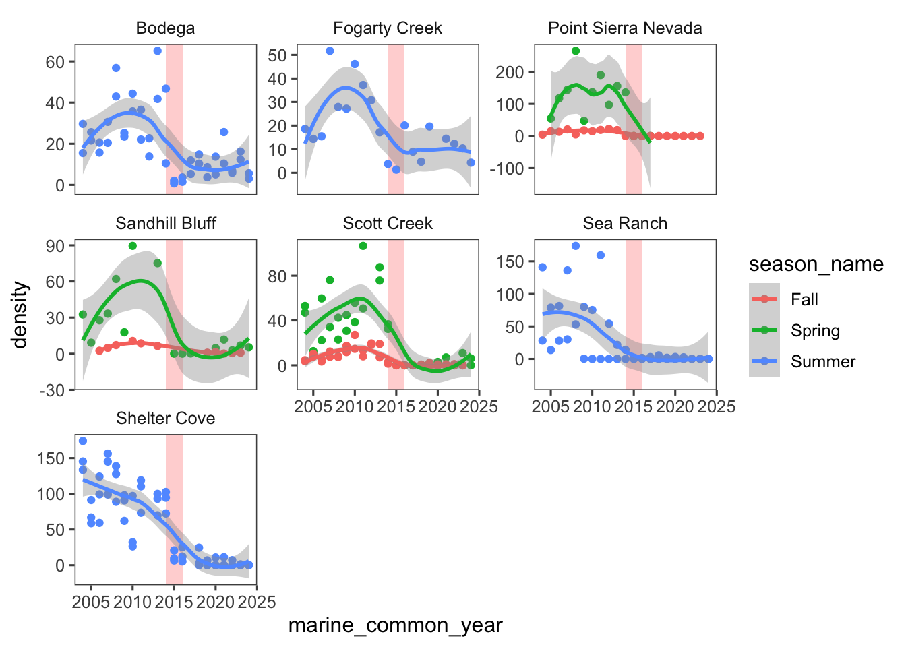
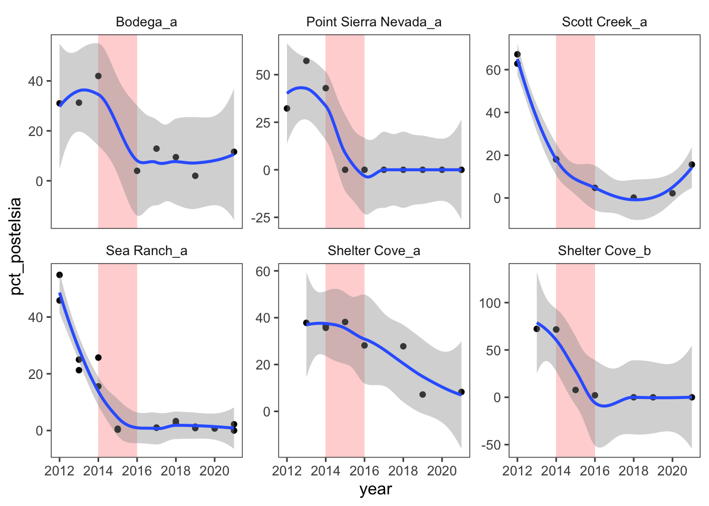
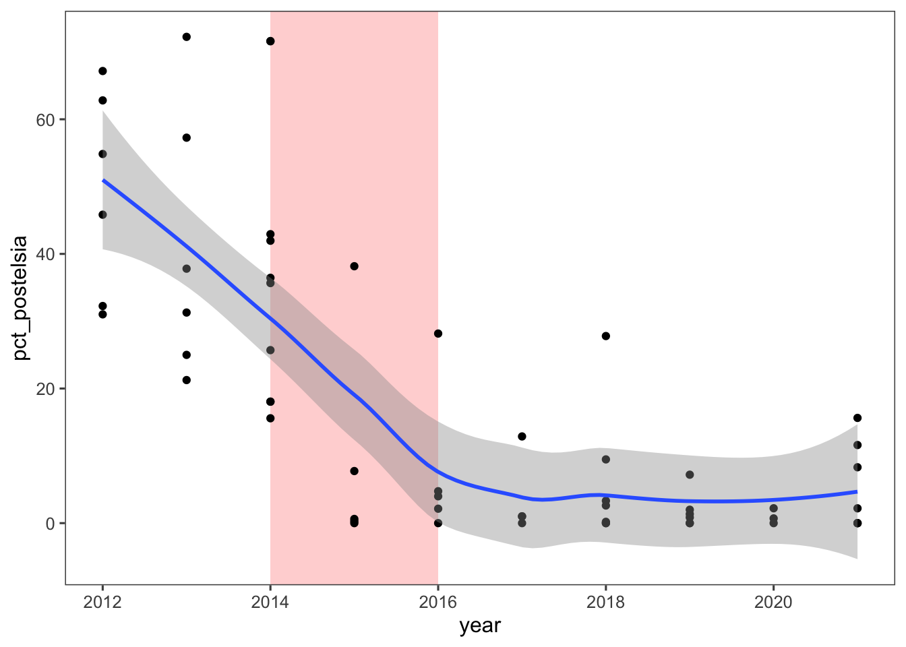
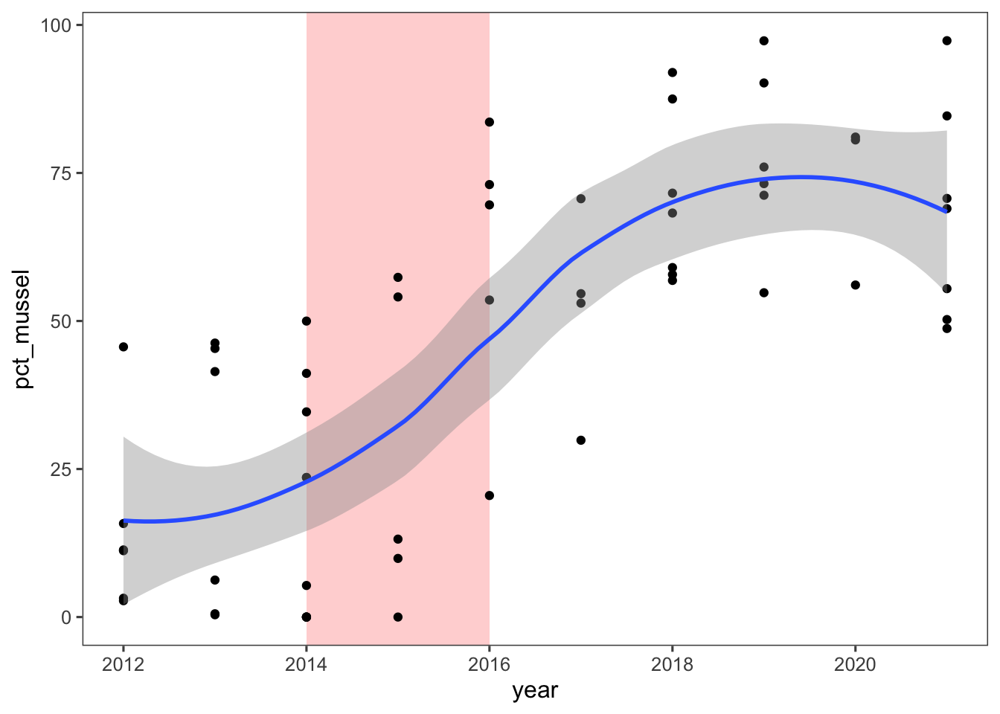
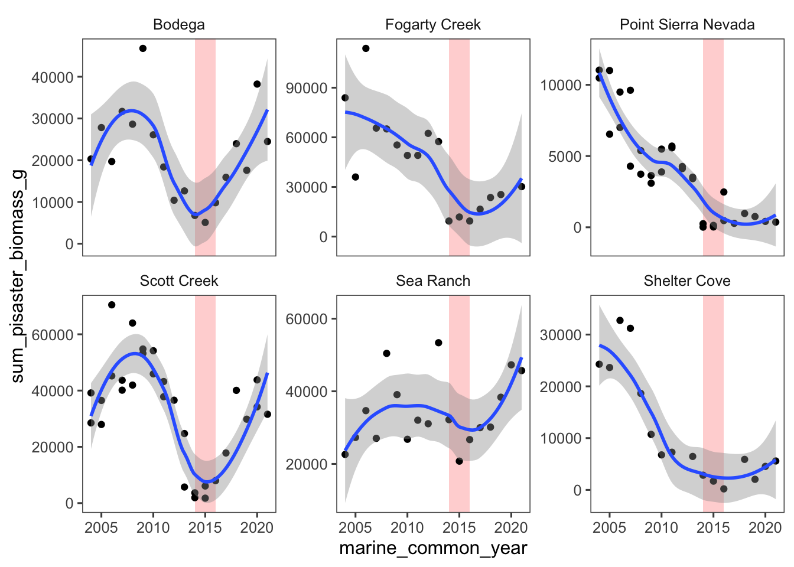

Show Code
# Part 1: Load Packages --------------------------------------------------
# Load packages
packages <- c("tidyverse", "mgcv", "ggthemes")
pacman::p_load(packages, character.only = TRUE); rm(packages)
setwd(here::here())In this document, we begin some preliminary investigation of datasets that we can leverage to explore the impact of the 2014-2016 marine heatwave on Postelsia palmaeformis
# Part 1: Load Packages --------------------------------------------------
# Load packages
packages <- c("tidyverse", "mgcv", "ggthemes")
pacman::p_load(packages, character.only = TRUE); rm(packages)
setwd(here::here())One of the primary datasets is permanent Postelsia plots—2 m wide band transects from 5 to 10 m in length that run across patches of Postelsia. The number of Postelsia plots varies from 1 - 3 plots per site. First, lets look at a breakdown of the number of sites.
#Load files
postelsia_raw <- read_csv("data/raw/postelsia_counts_2024Nov1.csv")site_summary <- postelsia_raw %>%
select(marine_site_name, marine_common_year, season_name, plot_code, total, plot_area_m2) %>%
mutate(density = total/plot_area_m2) %>%
group_by(marine_site_name) %>%
summarize(n_years = n_distinct(marine_common_year),
n_years_post2004 = n_distinct(marine_common_year[marine_common_year > 2004])
) %>%
arrange(desc(n_years))
print(site_summary)# A tibble: 17 × 3
marine_site_name n_years n_years_post2004
<chr> <int> <int>
1 Scott Creek 26 20
2 Fogarty Creek 24 19
3 Bodega 23 20
4 Sandhill Bluff 23 17
5 Sea Ranch 21 20
6 Point Sierra Nevada 20 19
7 Shelter Cove 19 18
8 Stornetta 12 12
9 False Klamath Cove 11 11
10 Gerstle Cove 9 9
11 Piedras Blancas 9 9
12 Point Arena 8 8
13 Mal Paso 6 1
14 Del Mar Landing 4 4
15 Phillips Gulch 3 3
16 Saunders Reef 3 3
17 Windermere Point 3 3Question: Should we set a threshold of the number of years required for sampling such that they can be included as a focal site in analysis? Should we only have a few focal sites, or do we want to share all the data? (i.e. as supplemental to the main sites, which are the ones we will analyze because of the long time series)
Here are the trends for the 7 sites with >15 years of data since 2004:
postelsia_summary <- postelsia_raw %>%
select(marine_site_name, marine_common_year, season_name, plot_code, total, plot_area_m2) %>%
mutate(density = total/plot_area_m2) %>%
#Filter for only sites with 15+ years of data
group_by(marine_site_name) %>%
filter(n_distinct(marine_common_year) > 15) %>%
ungroup() %>%
#Filter for surveys after 2004
filter(marine_common_year >= 2004) %>%
mutate(marine_site_name = factor(marine_site_name),
# marine_common_year = factor(marine_common_year),
season_name = factor(season_name),
plot_code = factor(plot_code))
ggplot(postelsia_summary,
aes(x=marine_common_year, y=density, color = season_name))+
# Add semi-transparent red box spanning 2014-2016
annotate("rect", xmin = 2014, xmax = 2016, ymin = -Inf, ymax = Inf,
fill = "red", alpha = 0.2) +
geom_point()+
# geom_vline(xintercept = 2015)+
# stat_smooth(method = 'loess', color = "darkgreen")+
geom_smooth()+
facet_wrap(facets = "marine_site_name", scales = "free_y")+
theme_few()`geom_smooth()` using method = 'loess' and formula = 'y ~ x'
Note: the plot above has all seasons mixed into one figure.
Question: Do we want to choose 1 “canonical” season for the surveys (for each site), or have survey season as a predictor in our modeling?
Primary survey seasons:
Bodega – Summer
Fogarty Creek – Summer
Point Sierra Nevada – Fall (more years) or Spring (more signal)?
Sandhill Bluff – Spring
Scott Creek – Fall or Spring ?
Sea Ranch – Summer
Shelter Cove – Summer
One potentially valuable dataset that we need to strongly consider whether we include it or not is the repeated photos data. Some of the photos have been manually delineated to determine the % cover of postelsia + mussels. However, not all photos have been done and only at a handful of sites, and there is some funkiness to the data. Here’s a coarse breakdown of the sampling coverage:
pct_cover_photos <- read_csv("data/raw/pct_cover_photos_raw.csv") %>%
mutate(photo = paste(marine_site_name, pan, sep = "_")) print(pct_cover_photos %>%
group_by(photo) %>%
summarise(n_years = length(unique(year))))# A tibble: 6 × 2
photo n_years
<chr> <int>
1 Bodega_a 8
2 Point Sierra Nevada_a 10
3 Scott Creek_a 6
4 Sea Ranch_a 9
5 Shelter Cove_a 7
6 Shelter Cove_b 7Visualize trends from repeat photos split up by site:
ggplot(pct_cover_photos, aes(x=year, y=pct_postelsia)) +
annotate("rect", xmin = 2014, xmax = 2016, ymin = -Inf, ymax = Inf,
fill = "red", alpha = 0.2) +
geom_point()+
geom_smooth()+
facet_wrap(facets = "photo", scales = "free_y")+
theme_few()`geom_smooth()` using method = 'loess' and formula = 'y ~ x'
Visualize repeat photo trends not split by site:
ggplot(pct_cover_photos, aes(x=year, y=pct_postelsia)) +
annotate("rect", xmin = 2014, xmax = 2016, ymin = -Inf, ymax = Inf,
fill = "red", alpha = 0.2) +
geom_point()+
geom_smooth()+
theme_few()`geom_smooth()` using method = 'loess' and formula = 'y ~ x'
ggplot(pct_cover_photos, aes(x=year, y=pct_mussel)) +
annotate("rect", xmin = 2014, xmax = 2016, ymin = -Inf, ymax = Inf,
fill = "red", alpha = 0.2) +
geom_point()+
geom_smooth()+
theme_few()`geom_smooth()` using method = 'loess' and formula = 'y ~ x'
Question: Do we want to use these data? If so, how confident are we in the extracted values and reproduceability? Would we have to extract percent cover from all photos from the focal sites (and if so, who will do that and when/how)?
There is some funkiness in these data. For example, some site/pan_ID combinations have 2 rows with different values, and some combinations have 2 rows with the same values.
Question: If we do not use these data, how will we quantify mussel expansion? Could use biodiversity surveys…if there has been sufficient sampling (?). What about percent cover of mussels in photo quads across the intertidal zone (i.e. across all the targeted assemblages)?
stars_raw <- read_csv("data/raw/seastarkat_size_count_zeroes_totals.csv")
stars <- stars_raw %>%
#Filter for only postelsia sites
filter(site_code %in% c("FOG", "SHT", "SEA", "BML", "SCT","PSN")) %>%
#Filter for only Pisaster ochraceus
filter(species_code=="PISOCH") %>%
#Filter for surveys after 2004
filter(marine_common_year >= 2004) %>%
#Remove rows with blank star counts
drop_na(size_bin) %>%
filter(size_bin != "NM") %>%
#Make columns numeric
mutate(size_bin = as.numeric(size_bin))%>%
#Calculate pisaster biomass using equation from Moritsch and Raimondi (2018)
#(https://doi.org/10.1002/ece3.3953)
mutate(pisaster_biomass_g = total * exp(log(size_bin)*2.34723-5.50262))
stars_summary <- stars %>%
group_by(marine_site_name, marine_common_year, marine_common_season) %>%
summarise(sum_pisaster_biomass_g = sum(pisaster_biomass_g)) %>%
mutate(survey_id = paste(marine_site_name,
marine_common_season,
sep = "_"))ggplot(stars_summary, aes(x=marine_common_year, y=sum_pisaster_biomass_g))+
annotate("rect", xmin = 2014, xmax = 2016, ymin = -Inf, ymax = Inf,
fill = "red", alpha = 0.2) +
geom_point()+
geom_smooth()+
facet_wrap(facets = "marine_site_name",
scales = "free_y"
)+
theme_few()`geom_smooth()` using method = 'loess' and formula = 'y ~ x'
Note that we do not have star data from Sandhill Bluff.
Question: Need search area for star quads to standardize pisaster biomass across sites. How do you typically do this?